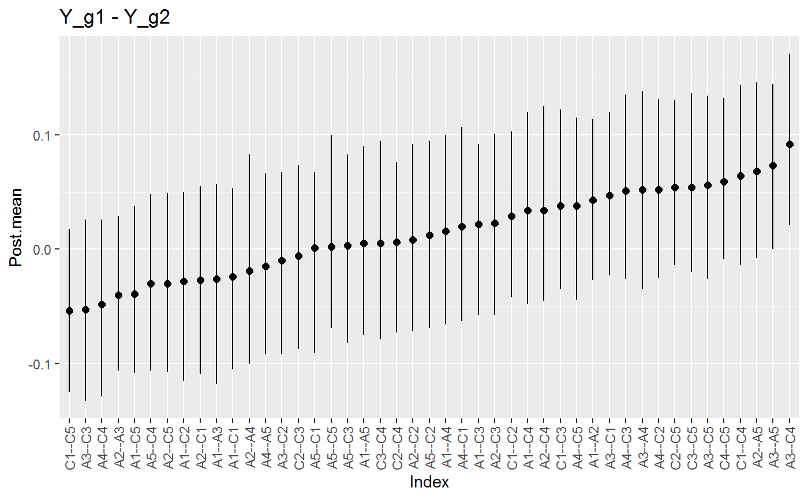
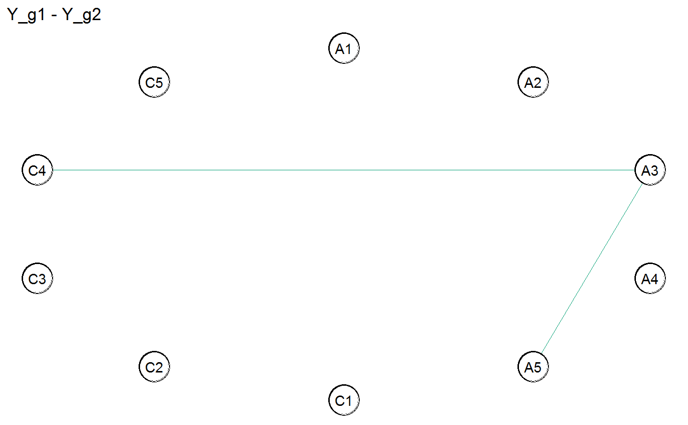
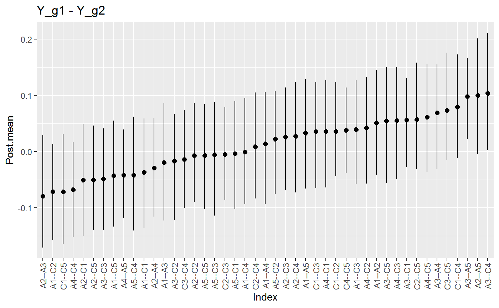
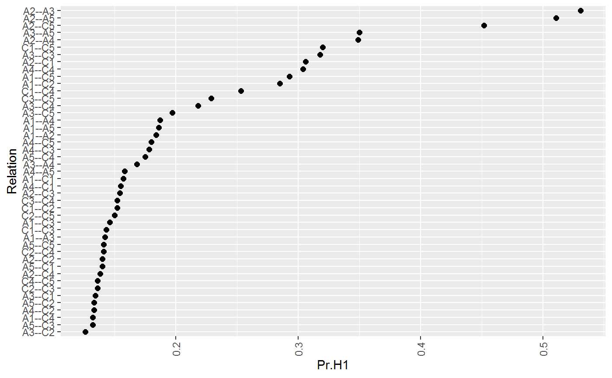
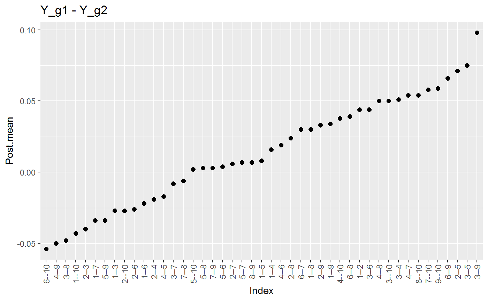
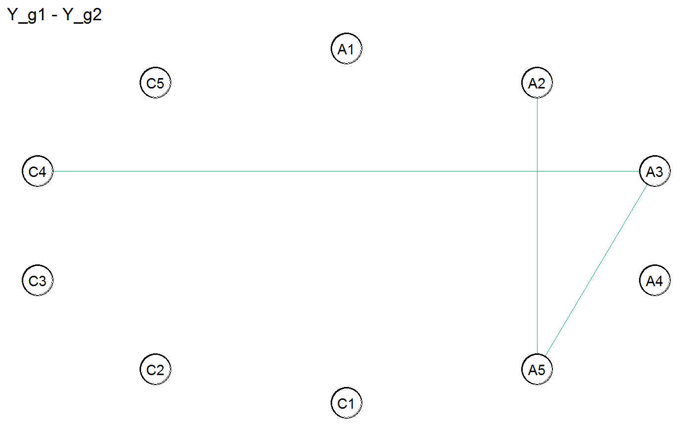

ggm_compare_estimate.RdCompare partial correlations that are estimated from any number of groups. This method works for continuous, binary, ordinal, and mixed data (a combination of categorical and continuous variables). The approach (i.e., a difference between posterior distributions) was described in Williams (2018) .
ggm_compare_estimate( ..., formula = NULL, type = "continuous", mixed_type = NULL, analytic = FALSE, prior_sd = 0.5, iter = 5000, progress = TRUE, seed = 1 )
| ... | Matrices (or data frames) of dimensions n (observations) by p (variables). Requires at least two. |
|---|---|
| formula | An object of class |
| type | Character string. Which type of data for Y ? The options include |
| mixed_type | Numeric vector. An indicator of length p for which varibles should be treated as ranks.
(1 for rank and 0 to use the 'empirical' or observed distribution). The default is currently to treat all integer variables
as ranks when |
| analytic | Logical. Should the analytic solution be computed (default is |
| prior_sd | The scale of the prior distribution (centered at zero), in reference to a beta distribtuion (defaults to 0.50). See note for further details. |
| iter | Number of iterations (posterior samples; defaults to 5000). |
| progress | Logical. Should a progress bar be included (defaults to |
| seed | An integer for the random seed. |
A list of class ggm_compare_estimate containing:
pcor_diffs partial correlation differences (posterior distribution)
p number of variable
info list containing information about each group (e.g., sample size, etc.)
iter number of posterior samples
call match.call
This function can be used to compare the partial correlations for any number of groups.
This is accomplished with pairwise comparisons for each relation. In the case of three groups,
for example, group 1 and group 2 are compared, then group 1 and group 3 are compared, and then
group 2 and group 3 are compared. There is a full distibution for each difference that can be
summarized (i.e., summary.ggm_compare_estimate) and then visualized
(i.e., plot.summary.ggm_compare_estimate). The graph of difference is selected with
select.ggm_compare_estimate).
Controlling for Variables:
When controlling for variables, it is assumed that Y includes only
the nodes in the GGM and the control variables. Internally, only the predictors
that are included in formula are removed from Y. This is not behavior of, say,
lm, but was adopted to ensure users do not have to write out each variable that
should be included in the GGM. An example is provided below.
Mixed Type:
The term "mixed" is somewhat of a misnomer, because the method can be used for data including only continuous or only discrete variables. This is based on the ranked likelihood which requires sampling the ranks for each variable (i.e., the data is not merely transformed to ranks). This is computationally expensive when there are many levels. For example, with continuous data, there are as many ranks as data points!
The option mixed_type allows the user to determine which variable should be treated as ranks
and the "emprical" distribution is used otherwise. This is accomplished by specifying an indicator
vector of length p. A one indicates to use the ranks, whereas a zero indicates to "ignore"
that variable. By default all integer variables are handled as ranks.
Dealing with Errors:
An error is most likely to arise when type = "ordinal". The are two common errors (although still rare):
The first is due to sampling the thresholds, especially when the data is heavily skewed.
This can result in an ill-defined matrix. If this occurs, we recommend to first try
decreasing prior_sd (i.e., a more informative prior). If that does not work, then
change the data type to type = mixed which then estimates a copula GGM
(this method can be used for data containing only ordinal variable). This should
work without a problem.
The second is due to how the ordinal data are categorized. For example, if the error states
that the index is out of bounds, this indicates that the first category is a zero. This is not allowed, as
the first category must be one. This is addressed by adding one (e.g., Y + 1) to the data matrix.
Mixed Data:
The mixed data approach was introduced in Hoff (2007)
(our paper describing an extension to Bayesian hypothesis testing if forthcoming).
This is a semi-paramateric copula model based on the ranked likelihood. This is computationally
expensive when treating continuous data as ranks. The current default is to treat only integer data as ranks.
This should of course be adjusted for continous data that is skewed. This can be accomplished with the
argument mixed_type. A 1 in the numeric vector of length pindicates to treat that
respective node as a rank (corresponding to the column number) and a zero indicates to use the observed
(or "emprical") data.
It is also important to note that type = "mixed" is not restricted to mixed data (containing a combination of
categorical and continuous): all the nodes can be ordinal or continuous (but again this will take some time).
Interpretation of Conditional (In)dependence Models for Latent Data:
See BGGM-package for details about interpreting GGMs based on latent data
(i.e, all data types besides "continuous")
Additional GGM Compare Methods
Bayesian hypothesis testing is implemented in ggm_compare_explore and
ggm_compare_confirm (Williams and Mulder 2019)
. The latter allows for confirmatory
hypothesis testing. An approach based on a posterior predictive check is implemented in ggm_compare_ppc
(Williams et al. 2020)
. This provides a 'global' test for comparing the entire GGM and a 'nodewise'
test for comparing each variable in the network Williams (2018)
.
Hoff PD (2007).
“Extending the rank likelihood for semiparametric copula estimation.”
The Annals of Applied Statistics, 1(1), 265--283.
Williams DR (2018).
“Bayesian Estimation for Gaussian Graphical Models: Structure Learning, Predictability, and Network Comparisons.”
arXiv.
doi: 10.31234/OSF.IO/X8DPR
.
Williams DR, Mulder J (2019).
“Bayesian Hypothesis Testing for Gaussian Graphical Models: Conditional Independence and Order Constraints.”
PsyArXiv.
doi: 10.31234/osf.io/ypxd8
.
Williams DR, Rast P, Pericchi LR, Mulder J (2020).
“Comparing Gaussian graphical models with the posterior predictive distribution and Bayesian model selection.”
Psychological Methods.
# \donttest{ # note: iter = 250 for demonstrative purposes # data Y <- bfi # males and females Ymale <- subset(Y, gender == 1, select = -c(gender, education))[,1:10] Yfemale <- subset(Y, gender == 2, select = -c(gender, education))[,1:10] ############################# ### example 1: continuous ### ############################# # fit model fit <- ggm_compare_estimate(Ymale, Yfemale, iter = 250, type = "continuous")#>#>#>#>#> BGGM: Bayesian Gaussian Graphical Models #> --- #> Type: continuous #> Analytic: FALSE#> Error in paste(as.character(fit$formula), collapse = " "): object 'fit' not found#> [[1]]#>#> BGGM: Bayesian Gaussian Graphical Models #> --- #> Type: continuous #> Analytic: FALSE #> Posterior Samples: 250 #> Credible Interval: 95 % #> --- #> Call: #> ggm_compare_estimate(Ymale, Yfemale, type = "continuous", iter = 250) #> --- #> Selected: #> #> Y_g1 - Y_g2 #> 1 2 3 4 5 6 7 8 9 10 #> 1 0 0 0.000 0 0.000 0 0 0 0.000 0 #> 2 0 0 0.000 0 0.000 0 0 0 0.000 0 #> 3 0 0 0.000 0 0.073 0 0 0 0.092 0 #> 4 0 0 0.000 0 0.000 0 0 0 0.000 0 #> 5 0 0 0.073 0 0.000 0 0 0 0.000 0 #> 6 0 0 0.000 0 0.000 0 0 0 0.000 0 #> 7 0 0 0.000 0 0.000 0 0 0 0.000 0 #> 8 0 0 0.000 0 0.000 0 0 0 0.000 0 #> 9 0 0 0.092 0 0.000 0 0 0 0.000 0 #> 10 0 0 0.000 0 0.000 0 0 0 0.000 0 #> --- #>#> [[1]]#>########################## ### example 2: ordinal ### ########################## # fit model fit <- ggm_compare_estimate(Ymale, Yfemale, type = "ordinal", iter = 250, prior_sd = 0.25)#>#>#>#>#> BGGM: Bayesian Gaussian Graphical Models #> --- #> Type: ordinal #> Analytic: FALSE#> Error in paste(as.character(fit$formula), collapse = " "): object 'fit' not found#> [[1]]#>#> BGGM: Bayesian Gaussian Graphical Models #> --- #> Type: ordinal #> Analytic: FALSE #> Posterior Samples: 250 #> Credible Interval: 95 % #> --- #> Call: #> ggm_compare_estimate(Ymale, Yfemale, type = "ordinal", prior_sd = 0.25, #> iter = 250) #> --- #> Selected: #> #> Y_g1 - Y_g2 #> 1 2 3 4 5 6 7 8 9 10 #> 1 0 0 0.000 0 0.000 0 0 0 0.000 0 #> 2 0 0 0.000 0 0.000 0 0 0 0.000 0 #> 3 0 0 0.000 0 0.098 0 0 0 0.104 0 #> 4 0 0 0.000 0 0.000 0 0 0 0.000 0 #> 5 0 0 0.098 0 0.000 0 0 0 0.000 0 #> 6 0 0 0.000 0 0.000 0 0 0 0.000 0 #> 7 0 0 0.000 0 0.000 0 0 0 0.000 0 #> 8 0 0 0.000 0 0.000 0 0 0 0.000 0 #> 9 0 0 0.104 0 0.000 0 0 0 0.000 0 #> 10 0 0 0.000 0 0.000 0 0 0 0.000 0 #> --- #>######################### ### example 3: mixed ### ######################### # fit model fit <- ggm_compare_explore(Ymale, Yfemale, type = "mixed", iter = 250)#>#>#>#>#>#>#> BGGM: Bayesian Gaussian Graphical Models #> --- #> Type: mixed #> Formula: #> Posterior Samples: 250 #> Observations (n): #> Group 1: 867 #> Group 2: 1765 #> Variables (p): 10 #> Relations: 45 #> Delta: 24 #> --- #> Call: #> ggm_compare_explore(Ymale, Yfemale, type = "mixed", iter = 250) #> --- #> Hypotheses: #> H0: rho_g1 = rho_g2 #> H1: rho_g1 - rho_g2 = 0 #> --- #> #> Relation Post.mean Post.sd Pr.H0 Pr.H1 #> A1--A2 0.042 0.046 0.816 0.184 #> A1--A3 -0.022 0.048 0.858 0.142 #> A2--A3 -0.093 0.048 0.469 0.531 #> A1--A4 -0.043 0.055 0.813 0.187 #> A2--A4 -0.076 0.049 0.651 0.349 #> A3--A4 0.027 0.056 0.832 0.168 #> A1--A5 0.045 0.049 0.814 0.186 #> A2--A5 0.096 0.050 0.489 0.511 #> A3--A5 0.066 0.041 0.650 0.350 #> A4--A5 -0.022 0.056 0.842 0.158 #> A1--C1 -0.030 0.049 0.843 0.157 #> A2--C1 -0.076 0.052 0.694 0.306 #> A3--C1 0.012 0.050 0.866 0.134 #> A4--C1 0.029 0.051 0.845 0.155 #> A5--C1 0.011 0.052 0.860 0.140 #> A1--C2 -0.069 0.051 0.715 0.285 #> A2--C2 -0.015 0.050 0.860 0.140 #> A3--C2 -0.003 0.046 0.874 0.126 #> A4--C2 0.009 0.048 0.867 0.133 #> A5--C2 0.003 0.049 0.867 0.133 #> C1--C2 0.021 0.044 0.848 0.152 #> A1--C3 0.026 0.048 0.854 0.146 #> A2--C3 -0.027 0.049 0.846 0.154 #> A3--C3 -0.074 0.052 0.682 0.318 #> A4--C3 0.042 0.048 0.822 0.178 #> A5--C3 0.004 0.049 0.868 0.132 #> C1--C3 0.016 0.049 0.857 0.143 #> C2--C3 -0.012 0.048 0.864 0.136 #> A1--C4 -0.012 0.046 0.868 0.132 #> A2--C4 -0.007 0.053 0.862 0.138 #> A3--C4 0.055 0.054 0.782 0.218 #> A4--C4 -0.080 0.062 0.696 0.304 #> A5--C4 -0.039 0.055 0.825 0.175 #> C1--C4 0.062 0.048 0.747 0.253 #> C2--C4 -0.010 0.049 0.859 0.141 #> C3--C4 -0.032 0.046 0.848 0.152 #> A1--C5 -0.069 0.050 0.707 0.293 #> A2--C5 -0.092 0.050 0.548 0.452 #> A3--C5 0.047 0.060 0.803 0.197 #> A4--C5 0.038 0.054 0.820 0.180 #> A5--C5 -0.014 0.053 0.859 0.141 #> C1--C5 -0.073 0.049 0.680 0.320 #> C2--C5 0.028 0.048 0.850 0.150 #> C3--C5 0.057 0.051 0.771 0.229 #> C4--C5 -0.005 0.037 0.864 0.136 #> ---########################### ### example 4: analytic ### ########################### # fit model fit <- ggm_compare_estimate(Ymale, Yfemale, analytic = TRUE) # summary summary(fit)#> BGGM: Bayesian Gaussian Graphical Models #> --- #> Type: continuous #> Analytic: TRUE#> Error in paste(as.character(fit$formula), collapse = " "): object 'fit' not found#> [[1]]#>#> BGGM: Bayesian Gaussian Graphical Models #> --- #> Type: continuous #> Analytic: TRUE #> Posterior Samples: 5000 #> Credible Interval: 95 % #> --- #> Call: #> ggm_compare_estimate(Ymale, Yfemale, analytic = TRUE) #> --- #> Selected: #> #> Y_g1 - Y_g2 #> 1 2 3 4 5 6 7 8 9 10 #> 1 0 0.000 0.000 0 0.000 0 0 0 0.000 0 #> 2 0 0.000 0.000 0 0.071 0 0 0 0.000 0 #> 3 0 0.000 0.000 0 0.075 0 0 0 0.098 0 #> 4 0 0.000 0.000 0 0.000 0 0 0 0.000 0 #> 5 0 0.071 0.075 0 0.000 0 0 0 0.000 0 #> 6 0 0.000 0.000 0 0.000 0 0 0 0.000 0 #> 7 0 0.000 0.000 0 0.000 0 0 0 0.000 0 #> 8 0 0.000 0.000 0 0.000 0 0 0 0.000 0 #> 9 0 0.000 0.098 0 0.000 0 0 0 0.000 0 #> 10 0 0.000 0.000 0 0.000 0 0 0 0.000 0 #> --- #>#> [[1]]#># }